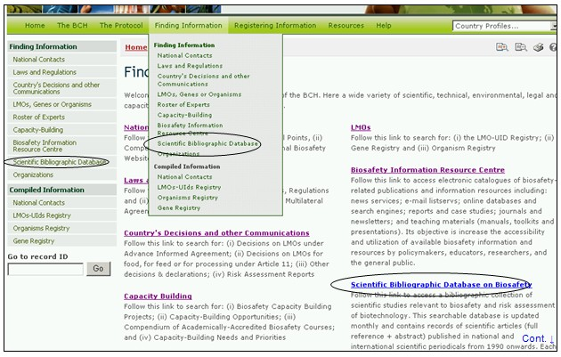
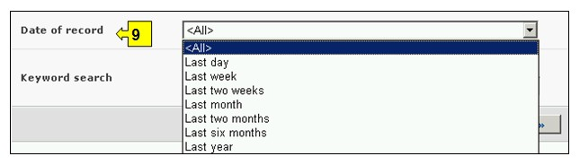
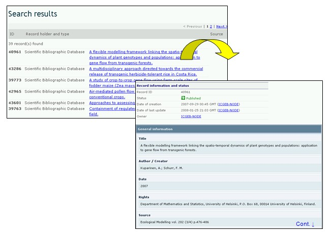

URL: http://bch.cbd.int/database/bibliographic-references/
Article 20 of the Protocol establishes the BCH in order to facilitate the exchange of information and experience with LMOs among parties, so as to assist them in implementing the Protocol. To help fulfill this role the BCH Central Portal contains information submitted by Parties, governments and organizations that is relevant to biosafety and implementation of the Protocol.
In addition to the Biosafety Information Resource Centre (BIRC), detailed in section 2.7 of this module, the BCH provides access to a bibliographic collection of scientific articles (full reference + abstract), published in national and international scientific periodicals from 1990 onwards, that are relevant to biosafety and risk assessment of biotechnology. The Scientific Bibliographic Database is hosted and managed by the International Centre for Genetic Engineering and Biotechnology (ICGEB) and has been made interoperable with the BCH.
The BCH search interface for publications in the Scientific Bibliographic Database can be accessed using the link in the Finding Information drop down menu on the navigation bar, or the link in the left hand menu of the Finding Information page or the link in the Scientific Bibliographic Database text on the same page.

Figure 94
On the Search the Scientific Bibliographic Database on Biosafety page there are ten search criteria boxes provided for refining searches in this database. Each of them has a drop down menu from which it is possible to select the required criteria. The default setting for each drop down menu is the first item at the top of the menu list. On the right side of each box, a button allows the user to activate multiple selections. Once in the multiple selection mode it is possible to add more criteria to the selection by clicking on the relevant criteria while pressing the Ctrl (Control) key.
Searches that identify more than 1000 records are truncated to the first 1000 records produced by the search.

Figure 95
Box 1 [Title] provides an option for the user to type in the title of a publication. The user can also enter a word or words from the title using established search syntax with AND or OR between strings of words.

Figure 96
Box 2 [Author(s)] allows the user to search for one or more specific author by inserting the last name(s) into this search box.

Figure 97
Box 3 [Publication year] lists options for the publication date of the article. It allows the user to choose the exact year of the publication(s) searched (by only using the year box) or a time range defined as ‘earlier than’ or later than’ the year selected.

Figure 98
Box 4 [Publisher] allows the user to search the database for articles according to the publisher’s name.

Figure 99
Box 5 [Thematic area] lists the major thematic areas of the available publication and allows the user to narrow a search to one or more of these.

Figure 100
Box 6 [Type of record] lists the types of records stored in this database. This allows the user to narrow the search to a specific source of information.

Figure 101
Box 7 [Language] allows a user to limit the search to documents in one or more languages.

Figure 102
Box 8 [ISSN] allows the user to enter one or more International Standard Serial Numbers (ISSN), to locate a specific publication of interest. An ISSN is a unique eight-digit number used to identify a print or electronic periodical publication. The ISSN system was adopted as international standard ISO 3297 in 1975.

Figure 103
Box 9 [Date of record] allows the user to narrow the search according to the date records have been registered in the BCH. The drop down menu provides a number of options for limiting the search to only those records submitted within the selected interval of timeframe (e.g. ‘last day’, ‘last month’, ‘last year’, etc.).

Figure 104
Box 10 [Keyword search] provides an opportunity for using keywords to narrow the search. The user can use standard keyword syntax (combination of AND / OR operators) to search with multiple words or core parts of words (e.g. “Import OR Export”). A search that is made by using keywords only produces results of records containing exactly the searched text and not possible synonyms that have not been inserted (i.e. a search with the single keyword “Maize” will produce a list of records containing the word “Maize” but not the words “Corn” or “Zea mays”).

Figure 105
The search page offers three buttons to produce a record list. The Search Now button (both at the top and bottom of the search interface) allows the user to activate a search based on the search criteria selected in the search facility boxes. The search results are sorted alphabetically by default according to country name. The Browse all records (at the bottom of the search interface) allows the user to obtain a list of all records in this database.

Figure 106
Example: A user wishes to identify recent scientific articles on gene flow from crops. The user selects (i) later than 2006 in the publication year boxes and (ii) enters gene flow OR outcrossing in the Keyword search. The search results are presented in alphabetical order based on the titles of the articles.

Figure 107

Figure 108
Assuming that the user finds a useful article by the author Lavigne, the search can be refined by adding this name to the Author(s) search box. This identifies more recent articles by the same author regarding this subject.

Figure 109

Figure 110